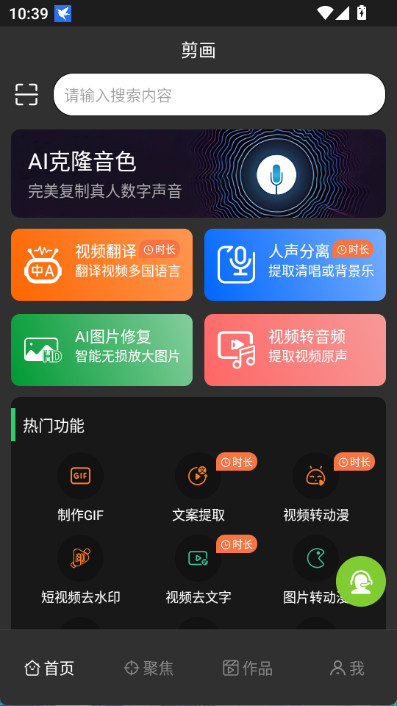
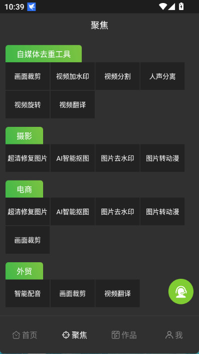

剪画付费账本：AI 工具箱值不值得按月掏钱
把剪画的配额、功能边界和同类替代拉平算一遍——轻度修图、主力做短剧、重度出海，每档用户的时间账和替代路数都在这里。
开门见山：它到底值不值得掏钱
我装剪画的时候是抱着"AI 工具箱都差不多"的心态。三个月后续费前我把它的功能边界、配额消耗和手头的替代工具拉了一张表——结论不是"必须买"也不是"完全不用"，而是得看你怎么用。
剪画的定位很明确，官网和应用市场的介绍口径一致：它是一个把视频翻译、AI 配音、字幕生成、图片修复上色、抠图去水印、声音克隆打包在一起的安卓端工具集。开发者是深圳市徽音科技有限公司，v2.16.4 版本安装包约 38MB，Google Play 和国内应用市场都能搜到。它的付费版核心是解锁 AI 大模型的配额——翻译、配音、修复这些功能背后都是云端算力，免费版给的那点量够尝鲜，但真用来干活就是另一回事。
定价拆解：免费版给什么，付费版多什么
样本文档里没有直接贴出价格表，但opencut文档里有完整的配额机制描述和各功能的调用成本明细，可以反推一个清晰的边界。剪画的配额是消耗型的——每次调用 AI 大模型功能都会扣，不同功能扣的量不一样：图片压缩、背景擦除这种"收拾型"小工具基本不扣，而视频翻译、声音克隆、超清修复属于重消耗。
免费版相当于给了一张"试吃券"：每个功能都能跑，但次数极少。我第一次开声音克隆的时候，录完采样提交训练，等了大概二十分钟出了一个音色，再试第二次就弹配额不足了。图片修复那边更直接——导一张模糊图进去，AI 重建细节大概需要十秒，免费版总共修了不到五张就见底。
付费版的核心变量是两件事：配额池扩大多少，以及有没有解锁声音克隆和视频翻译的高级组合。样本里提到 2.9.0 版本把声音克隆接进了视频翻译——中文视频翻译成俄语，用你的克隆音色朗读译文字幕。这个组合是短剧出海团队用得最重的，免费版能不能碰这条链路，直接决定了它对那类用户的价值。
从功能边界看，免费版更像一个"能跑通但干不了活"的 demo——让你知道每个工具怎么用、效果大概什么水平，但真要批量处理素材、持续出活，配额限制会像天花板一样卡在头顶。付费版则是把天花板抬高到可以当成日常生产工具的程度。至于具体是按订阅还是买断，应用内显示为准——但从它的迭代频率看，订阅模式更合理，因为大模型成本本身就是持续的。

算账：三类用户的时间成本
真正要回答"值不值"，得把你自己套进某一类使用强度里。下载体验大概五分钟就能摸清它的功能边界，再算省下来的时间能不能覆盖那个订阅费。
轻度用户：偶尔修一张老照片或改一段字幕。 免费版大概率够用。我妈那年整理老相册，黑白照片上色 + 超清修复，五张图免费版刚刚好够跑，完了就卸载，再不用装回来。你一年到头碰不到十次 AI 工具，订阅纯属浪费。哪怕免费版配额不够，找个同类免费网页工具顶一下就行——老照片上色这件事，现在公共网页上有好几个开源方案能跑，只是体验不如剪画一条流水线顺。
主力用户：短剧剪辑或电商素材处理，每周都要动 AI 工具。 这一档最有意思。剪画的价值在于一条流水线省的时间——电商场景下，收来的授权素材先去水印、再超清修复、最后压缩到平台上传限值，三步在同一个 App 里串起来，不用切三个网页、不用注册三个账号。短剧那边更夸张：视频翻译自动出字幕 + 克隆音色配音，一条两三分钟的素材，剪画十分钟给你出外语版，手动弄的话至少半天。但代价是你得算清楚：每月用掉的配额能不能覆盖订阅费？如果一周只做三五个视频、十来张图，那摊下来每次调用的成本会偏高。
重度用户：短剧出海团队或电商代运营，每天批量跑翻译和修复。 闭眼付。声音克隆 + 视频翻译的组合是这个群体的刚需——中文短剧翻译成俄语版，海外观众听到的是"同一个你"在说外语，这种体验是手动配音完全没法比的。免费版连这条链路的边都碰不到，付费版是唯一能把它当日常生产工具的选择。而且这个组合出来的内容直接变现，订阅费相当于生产成本里的固定开支。

替代方案：不付这笔钱还有什么路
剪画的功能拆开来看，每一项都有免费或更便宜的替代。但问题是——你要不要为了省订阅费，接受它们各自的代价。
视频翻译：YouTube 自动字幕已经能输出翻译版，但质量取决于原视频的清晰度和口音；如果是短剧那种有背景音乐、有方言的素材，自动字幕经常错得离谱。免费网页版的视频翻译工具大多有水印、有配额限制、上传速度慢，而且大多不支持克隆音色配音。
图片修复上色：开源的 Real-ESRGAN 本地就能跑，但要部署要调参，老照片上色还得单独找另一个模型。对于不想折腾技术的人来说，剪画点一下的事，换成开源方案可能要花半小时配置环境。
抠图去水印：Remove.bg 的免费版够用，剪画的优势是它和图片修复、背景擦除在同一个 App 里串着——抠完直接修修完直接压体积。单独用 Remove.bg 的话，抠完的图你还得再开一个工具去修。
声音克隆：这个剪画的壁垒是和视频翻译的联动。单独的声音克隆工具不少——从 ElevenLabs 到开源的 RVC 都能做，但克隆完要接翻译配音，还是得再找工具。剪画把这两件事接在一起之后，短剧出海那条链路就变成了：传视频 → 选克隆音色 → 选目标语言 → 等结果。四步一条线，手动拼工具的话至少要拆成五六步。
替代方案的共同问题不是"做不到"，而是效率和体验的碎片化。你可以免费把每一项都找个替代，但整个流程会变成一堆账号、一堆网页、一堆格式转换中间文件。剪画的订阅费买的就是"一站式"这件事——让你不用想下一个工具是什么，打开 App 就直接干。
结论：三秒对号入座
最后把账收拢成一张表，你看看自己属于哪一档：
| 你是…… | 结论 |
|---|---|
| 一年用不到十次，偶尔修张老照片 | 用免费版或找个网页工具，永远不用付 |
| 每周做五六个视频或十来张图，效率敏感 | 先试一个月订阅，算算省的时间值不值 |
| 短剧出海 / 电商代运营，每天批量跑 | 闭眼付，订阅费是生产成本 |
补一句鸡贼的：剪画的订阅在应用内买和在 Google Play 买有时候价格不一样——Android 用户可以先把两个渠道的价格都看一眼再决定。国内市场的版本更新节奏比 Google Play 可能慢一周左右，但核心功能不影响。还有个小技巧——声音克隆只需要采样一次，音色永久存着，你可以先花一个月订阅跑一次克隆，之后用免费配额慢慢用配音功能。
本质上剪画卖的不是某个单独的 AI 功能，而是把一堆零散的 AI 能力打包成一个顺手的工具箱。值不值那笔订阅费，取决于你愿不愿意为"顺手"这件事掏钱。我的判断是：轻度用户永远不用付，主力用户看效率账，重度用户没得选。
这套资料在三个仓库都能拿到，App 里每个功能页也都有对应的说明和边界提示。配额够不够用、值不值得续费，跑一两个实际场景就有答案。开源资料我同步在了GitHub、Gitee和GitCode，方便不同网络环境取用。